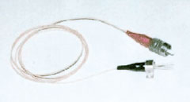
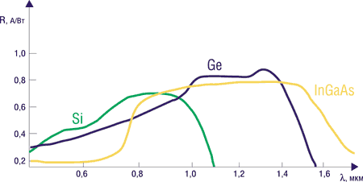
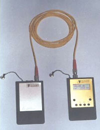
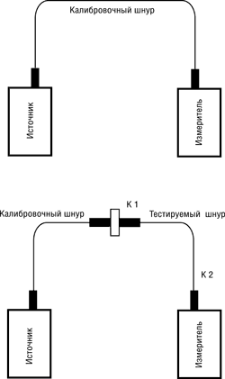
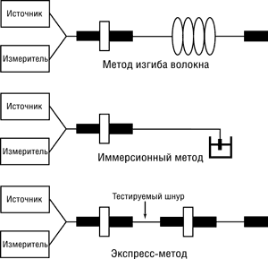
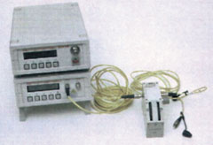
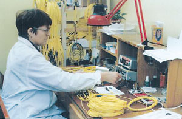
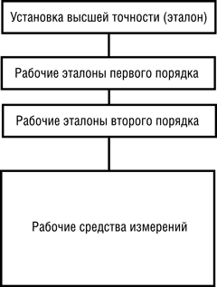
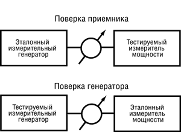
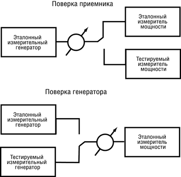

Елена Андреева,
к.ф-м.н., менеджер ЗАО «Перспективные технологии»
andreeva@peterlink.ru
Алексей Сергеев,
инженер отдела активного оборудования ЗАО «Перспективные технологии»
pfiber@nm.ru
Оптические кабели находят все более широкое применение - от магистральных линий и корпоративных систем передачи данных до локальных компьютерных сетей. Преимущество волоконной оптики несомненно: реализуемые в оптических каналах скорости передачи информации пока недостижимы для медных кабелей.
Немаловажно и то преимущество, что тестировать оптический кабель проще. Измерению подлежит меньшее число параметров, в большинстве случаев - только потери в кабеле, так как перекрестных помех в оптике нет. Кроме того, приборы для тестирования оптических каналов дешевле, чем для медных.
Несмотря на возрастающее разнообразие измерительных приборов, основным "помощником" специалиста по установке и эксплуатации волоконно-оптических систем служит оптический тестер - без преувеличения, самое распространенное рабочее средство измерения. Тестер используется при входном контроле параметров оптического кабеля, его монтаже, приемосдаточных испытаниях кабельной системы, контроле выходных параметров активного оборудования и обслуживании действующей линии. Преимущества этого скромного прибора - простота использования, малые габариты и масса, автономное питание и сравнительно низкая стоимость. Тестер обеспечивает достаточно высокую точность измерений, стабильность параметров в течение всего времени измерения, удобен в обращении, компактен и экономичен.
Для достоверного тестирования оптических волокон тестер следует подбирать в соответствии с активным оборудованием компьютерной сети. Так, например, если для передачи данных используется одномодовое активное оборудование и соответственно одномодовый кабель, то измерительный генератор также должен быть одномодовым. Кроме того, тестирование должно проводиться на длине волны передачи. Для того чтобы понять, что стоит за сухими цифрами и рекомендациями стандартов, рассмотрим подробнее "начинку" приборов.
Современное развитие ИТ влечет за собой рост и взаимопроникновение сетей передачи данных различного назначения. Локальные компьютерные сети включаются в корпоративные и ведомственные сети, объединяющие пользователей на большой территории. Это накладывает требования сертификации на компоненты кабельной системы как физической среды передачи данных и, следовательно, на контрольно-измерительное оборудование, используемое при тестировании сети. Требования к средствам измерений изложены в следующих законах и нормативных документах:
- "Закон РФ об обеспечении единства измерений, 15.06.93".
- "Государственный надзор и ведомственный контроль за средствами измерений. Основные положения. ГОСТ 8.002-86. 21.02.1986".
- "Временные технические требования к оптическим средствам измерений, предназначенным для применения на Взаимоувязанной сети связи РФ с дополнением № 1. 1999".
Оптический тестер как средство измерения излучаемой мощности
Тестер применяется для измерения мощности оптического излучения и определения потерь в волоконно-оптических световодах и кабелях. Исходя из этого, оптический тестер должен обеспечивать:
- большой динамический диапазон, достаточный для тестирования участков кабеля между усилителями;
- требуемую точность измерения в соответствующем спектральном диапазоне;
- возможность измерений в широком спектральном диапазоне;
- долговременную стабильность параметров;
- малое энергопотребление, обеспечивающее длительную работу от одного комплекта батарей.
По конструктивному исполнению тестеры подразделяются на два типа: комплекты из двух приборов - источника и измерителя и совмещающие в одном корпусе источник и измеритель. Тестеры в виде комплекта более универсальны, так как позволяют применять большее число методов измерений.
Генераторы оптического излучения
Основные требования к генераторам излучения - обеспечение требуемой мощности в волоконном световоде и долговременной стабильности параметров излучения. Излучение может быть как непрерывным, так и модулированным последовательностью импульсов в виде меандра, следующих с частотой 270 Гц, 1 или 2 кГц. Обычно в качестве источников для тестеров используются полупроводниковые лазерные диоды или светодиоды; первые применяются в основном в одномодовых системах, а вторые - в многомодовых линиях связи небольшой протяженности. Лазерные диоды мощнее, и угловая апертура их излучения меньше, поэтому мощность в волоконном световоде выше, чем в случае светодиода. Однако стоимость лазеров выше, а обеспечить их стабильную работу довольно сложно.
Достигаемая на практике мощность излучения от лазерного источника в одномодовом волоконном световоде позволяет тестировать кабели длиной до 250 км, что достаточно при существующих длинах регенерационных участков на магистральных линиях связи. Для повышения временной стабильности параметров излучения применяют специальные меры. Резонатор лазера просветляется с одной стороны для согласования волноводных параметров с волоконным световодом и уменьшения отражений между выходной гранью лазера и торцом волокна, что снижает амплитудные и фазовые шумы источника. С другой стороны резонатора устанавливается фотодиод обратной связи. Обратная связь по фототоку позволяет контролировать выходную мощность лазера и компенсировать флуктуации, вызванные температурной чувствительностью полупроводниковой структуры. Совокупность этих мер обеспечивает стабильность энергетических параметров источника в течение длительного времени. Полупроводниковый лазер, сопряженный с волоконным счетоводом, показан на рис. 1.
|  | Рис. 1. Лазер, сопряженный с волокном.
|
Светодиодные полупроводниковые источники, применяемые в локальных компьютерных сетях, характеризуются более широкой диаграммой направленности, практически изотропной в азимутальном направлении. Уровень мощности, вводимой в стандартный многомодовый волоконный световод, в среднем на порядок ниже, чем в предыдущем случае. Так как длины сегментов компьютерных сетей на многомодовых кабелях в соответствии с действующими стандартами не превышают 2 км, этой мощности вполне достаточно для проведения измерений.
С точки зрения практики важна не столько мощность оптического излучения, введенного в световод, сколько динамический диапазон измерений для данного прибора, измеряемый в децибелах, - интервал между мощностью источника оптического излучения и порогом чувствительности измерителя оптической мощности. Динамический диапазон определяет максимальное затухание оптического сигнала, которое может быть измерено данным комплектом приборов.
Измерители оптической мощности
Входящие в состав тестера измерители должны обеспечивать низкий порог чувствительности, широкий спектральный диапазон измерений, равномерную чувствительность в заданном спектральном диапазоне или на длинах волн калибровки.
Основной элемент измерителя - это фотодиод. Его базовая характеристика - чувствительность R, которая определяется как отношение фототока к падающей оптической мощности и измеряется в А/Вт:
R~(((,
где ( - квантовая эффективность (отношение количества электронов на выходе фотодиода к количеству падающих на его фоточувствительную площадку квантов света), ( - длина волны оптического излучения. Для идеального фотодиода ( = 1. Спектральные зависимости чувствительности для некоторых типов фотодиодов представлены на рис. 2.
|  |
| Рис. 2. Спектральная зависимость чувствительности фотоприемников на основе Si, Ge и InGaAs.
|
В ближнем ИК-диапазоне квантовая эффективность высока у кремниевых фотодиодов. В области длин волн 1000-1600 нм высокой квантовой эффективностью характеризуются германиевые фотодиоды. Фотодиоды на основе тройных (InGaAs) и четверных (InGaAsP) соединений при прочих равных условиях могут использоваться в более широком спектральном диапазоне. Этим обусловлено все возрастающее применение в тестерах именно таких фотоприемников, и такая тенденция только усиливается в связи с развитием систем со спектральным уплотнением. Неравномерность спектральной чувствительности фотодиодов компенсируется за счет соответствующих схем обработки. Обычно устанавливается равная чувствительность в точках калибровки, например, 850, 1310 и 1550 нм. В приборах более высокого класса калибровку компенсации неравномерности можно проводить с заданным шагом по длине волны, например, 1 нм или 5 нм.
Применяемые в настоящее время фотоприемники имеют довольно широкую фоточувствительную площадку. Типовой размер такой площадки у фотодиода на основе InGaAs - 1 мм, на Si и Ge - 5 мм. Это существенно больше размеров модового пятна на выходе волоконного световода, что позволяет применять одни и те же измерители как на одномодовых, так и на многомодовых линиях. Максимальная допустимая для точных измерений мощность определяется границей линейности характеристики измерителя (с учетом неравномерного характера распределения мощности на выходе световода).
Применение оптических тестеров
Основное назначение тестера - измерение мощности оптического излучения на выходе волоконно-оптической системы, определения затухания в ней и на отдельных компонентах кабельной системы и их соединениях. В настоящее время на российском рынке представлены измерительные приборы для волоконной оптики от десятков производителей; большинство из них иностранного производства. Параметры источников и приемников приведены в табл. 1 и 2.
Таблица 1. Сравнительные характеристики некоторых источников оптического излучения
| Произво-дитель | "Перспек-тивные техно-логии" | ЛОНИИР | КБВП | Wavetek | ANDO | EXFO |
| Марка | ПТ10ХY | Алмаз11 | FOD 2107 | OLS-6 | AQ4251 | FOT 700 |
| Тип источника | Лазер | Лазер | Лазер | Лазер | Лазер | Лазер |
| Длина волны, нм | 850, 1310, 1550 | 850, 1310, 1550 | 1550 | 1310, 1550 | 1310, 1550 | 1310, 1550 |
| Уровень выходного сигнала, дБ | ? -6 | ? -3 | -3 | -7 | -7 | -4 |
| Нестабиль-ность выходного уровня, дБ | 0,1 | 0,1 | 0,05 | Н/д | 0,05 (за 5 мин) | 0,1 (за 8 ч) |
| Ширина спектра излучения, нм | ? 5 | ? 5 | Н/д | Н/д | ? 5 | ? 5 |
| Время непрерыв-ной работы от одного комплекта источников, ч | 30 | 30 | 24 | Н/д | 15 | Н/д |
| Габариты, мм | 120х60х22 | 195х100х41 | 150х90х30 | 185х95х49 | 265х88х43 | 235х125х60 |
| Масса, г | 200 | 500 | 300 | 500 | 450 | 860 |
Таблица 2. Сравнительные характеристики некоторых измерителей оптической мощности
| Производитель | "Перспективные технологии" | ЛОНИИР | КБВП | W&G | EXFO | |
| Марка | ПТ2000 | ПТ2010 | Алмаз21 | FOD 1202 | OLP 18 | FOT 10A |
| Тип приемника | InGaAs | InGaAs | InGaAs | InGaAs | InGaAs | Ge |
| Динамический диапазон, дБ | +3- -60 | +10- -70 | +3- -60 | +3- -60 | +26- -60 | +6- -60 |
| Погрешность измерения относительных уровней, дБ | 0,2 | 0,13 | 0,2 | 0,25 | 0,13 | 0,2 |
| Возможность усреднения | + | + | + | - | - | Н/д |
| Диапазон длин волн, нм | 800-1600 | 800-1600 | 800-1600 | Н/д | 800-1600 | Н/д |
| Основная относительная погрешность измерения на длине волны калибровки, дБ | 0,5 | 0,25 | 0,5 | Н/д | Н/д | Н/д |
| Возможность усреднения результатов измерения | - | + | - | - | - | - |
| Наличие порта RS232 для связи с компьютером | - | + | - | - | - | - |
| Время непрерывной работы от одного комплекта батарей, ч | ? 50 (комплект аккуму-ляторов) | ? 40 (комплект аккуму-ляторов) | 40 | Н/д | 12 | Н/д |
| Габариты, мм | 120х60х22 | 120х60х22 | 195х100х41 | 150х90х30 | 185х95х49 | Н/д |
| Масса, г | 200 | 200 | Н/д | 300 | 500 | Н/д |
Для работы в диапазонах 800, 1300, 1700 нм подходят тестеры с приемниками на основе InGaAs. Они более чувствительны, чем германиевые фотоприемники, и, как правило, обеспечивают большой динамический диапазон. Дополнительное преимущество фотоприемников на тройных структурах в том, что у них более гладкая спектральная зависимость чувствительности, и их можно использовать во всем спектральном диапазоне, а не только на длинах калибровки. Это свойство приобретает особую актуальность в связи с развитием систем со спектральным уплотнением.
Немаловажную роль играют схемные решения в приборах. Наибольшую точность измерений обеспечивают приемники с цифровой обработкой сигнала. Это, как правило, приборы, разработанные недавно. Современная электронная "начинка" обеспечивает уменьшение их габаритов и снижение энергопотребления.
В отдельный класс можно выделить приемники для измерения мощных оптических сигналов. Основные сферы их применения - системы кабельного телевидения (CATV), линии с оптическими усилителями на активных волокнах. Динамический диапазон таких приемников смещен в сторону больших мощностей (обычно на 20 дБ).
Приборы российского производства ПТ2000 и ПТ2010 ("Перспективные технологии") и комплект Алмаз21 (ЛОНИИР) по своим параметрам не уступают зарубежным образцам, имеют все необходимые сертификаты и, что немаловажно для эксплуатации, техническую и гарантийную поддержку непосредственно от производителя. Измеритель ПТ2010 (рис. 3) позволяет проводить измерения в спектральных интервалах 800-900 нм, 1250-1350 нм и 1500-1650 нм с шагом 5 нм в каждом интервале. Цифровая обработка, во-первых, позволяет компенсировать неравномерность чувствительности фотодиода и повысить точность измерений, а во-вторых, обеспечивает стыковку прибора с компьютером.
|  | Рис. 3. Тестер ПТ2010: источник и измеритель.
|
Измерение прямых потерь
Метод вносимых потерь (замещения) применяется для определения потерь на разъемном соединении (рис. 4) и в оптическом кабеле.
|  | Рис. 4. Измерение потерь методом вносимых потерь (замещения).
|
В первом случае источник соединяется с измерителем калибровочным шнуром и измеряется уровень мощности P1. Затем последовательно с калибровочным шнуром включается тестируемый объект и измеряется значение P2. Потери ( (дБ), внесенные разъемным соединением К1, определяются по формуле
( = 10 lg (р1/р2),
где р1 и р2 измеряются в Вт, или по формуле
( = P1 - P2,
где P1 и P2 измеряются в дБм. После этого измерения повторяются для второго коннектора К2 тестируемого шнура. Современные модели тестеров позволяют занести значение реперного сигнала P1 в память прибора, и в дальнейшем оно будет автоматически вычитаться из результатов измерений P2.
Во втором случае реперный уровень Р1 измеряется на двух соединенных между собой калибровочных шнурах. Затем вместо второго шнура, подключенного к приемнику, включается тестируемый кабель и фиксируется значение Р2. Величина потерь (12 определяется так же, как в первом случае. Затем выходы кабеля меняются местами и измерения повторяются, фиксируется значение (21. Потери в кабеле определяются как среднее между (12 и (21.
Тестирование соединительных шнуров и входной контроль кабеля проводятся по данному методу с помощью одного тестера или мультиметра, в то время как для измерений потерь в линии необходимо два тестера или мультиметра, по одному с каждой стороны. В последнем случае необходимо сличить показания приборов: реперный уровень P1 на измерителе первого тестера определяется по сигналу источника второго комплекта и наоборот. После этого бригады специалистов, работающие на двух противоположных концах линии, подключают последовательно ко всем волокнам кабеля сначала первый источник и второй измеритель и фиксируют значение (12. Затем подключают второй источник и первый измеритель и проводят измерения (21 во встречном направлении. Поскольку потери во встречных направлениях могут отличаться друг от друга, то результаты измерений (12 и (21 усредняются.
Измерение потерь проводится в соответствии с ГОСТ 26599-85 ("Метод измерения вносимого затухания"), ГОСТ 26814-86 ("Кабели оптические. Методы измерения параметров") и ГОСТ 28871-90 ("Аппаратура линейных трактов цифровых волоконно-оптических систем передачи. Методы измерения основных параметров"). Зарубежные аналоги данных методов измерения потерь - это EIA FOTP (Fiber Optic Test Procedure) - 171; EAI/TIA FO 2.1 OFSTP-7 (для одномодовых световодов) и OFSTP-14 (для многомодовых световодов), а также TR NWT - 000326 (рекомендации Bellcore).
Метод обрыва. Этот метод применяется для измерения потерь в оптических кабелях до их прокладки и оконцевания коннекторами. Он основан на сравнении уровня мощности на выходе длинного тестируемого отрезка кабеля с уровнем, измеренным на его коротком участке, который получается путем обрыва кабеля в начале измеряемого образца. Другими словами, сначала измеряется уровень P2 на выходе строительной длины кабеля. Затем волокно обрывают вблизи источника и измеряют P1 на этом коротком участке. Потери определяются аналогично предыдущему случаю. Этот метод считается более точным, чем метод вносимых потерь, но он требует качественной подготовки торцов волокна и строгого соблюдения правил измерения.
Метод сравнения (сличения). Используется для определения потерь в кабеле. Сигнал от источника при помощи равноплечного ответвителя делится на два канала, один из которых подается непосредственно на измеритель и служит реперным уровнем, а второй вводится в оптический кабель и затем на вход того же измерителя. Разница значений мощности между первым и вторым каналами дает величину потерь в кабеле. Достоинство метода - высокая точность, так как исключается влияние флуктуаций выходной мощности источника с течением времени. Используется этот метод преимущественно на заводах при выходном контроле параметров кабеля, его испытаниях и т. д.
Метод сопряжения волокон. Применяется для определения потерь в кабеле с числом волокон не менее трех. Источник и приемник подключаются к волокнам кабеля на одной стороне линии. На другой стороне линии волокна поочередно стыкуются между собой, так что сигнал, пришедший с первой стороны по одному волокну, возвращается обратно по другому волокну этого же кабеля. Обозначим как (12 результат измерения потерь при стыковке первого и второго световодов в кабеле: (12 = (1 + (2. Аналогично для других пар волокон: (13 = (1 + (3, (23 = (2 + (3. Тогда потери в одном световоде можно определить по результатам трех измерений - (12, (13 и (23:
(1 = 0,5 ((12 - (23 + (13) (2 = 0,5 ((12 + (23 - (13) (3 = 0,5 (-(12+ (23 + (13).
Метод легко распространить на любое количество волокон. Его преимущество заключается в проведении всех измерений с одной стороны кабеля. Для тестирования кабелей на линиях большой протяженности можно пользоваться одним комплектом приборов (источник и измеритель). Легко повторить измерения в обратном направлении ((21, (32, (31). Ограниченная точность измерений этим методом обусловлена разбросом потерь на стыковке волокон с другой стороны кабеля. Поэтому метод используется при достаточной длине световодов в кабеле, когда вкладом этой погрешности (порядка 0,1 дБ) можно пренебречь.
Измерение возвратных потерь
Уровень возвратных потерь (смеси отражений Френеля и обратного рассеяния Рэлея) на разъемных соединениях кабелей начинает играть все большую роль с повышением дальности передачи в магистральных линиях связи, развитием сетей кабельного телевидения и т. д. Обратные отражения попадают на источник (передатчик) сигнала, накапливаются при многократных стыковках и выступают как помеха по отношению к полезному сигналу.
Так как возвратные потери во много раз меньше прямого сигнала, для их измерений необходим тестер с большим динамическим диапазоном (не менее 60 дБ). Для повышения точности измерения обратных потерь должны выполняться два условия: во-первых, измеритель должен быть откалиброван по известному отражению; во-вторых, должны быть измерены фоновые излучения (фоновые обратные потери - паразитные отражения), которые необходимо вычесть из результатов измерения.
Величину обратных потерь измеряют по методике, называемой в зарубежных источниках OCWR (Optical Continious Wave Reflectometer) - рефлектометрия непрерывным излучением. Тестируемый кабель подключается к излучателю через равноплечный ответвитель. Другой выход ответвителя подключается к измерителю, с помощью которого регистрируется уровень оптического излучения, отраженного от соединения ответвителя и тестируемого кабеля. Для того чтобы определить обратные потери на входном конце кабеля, соединенном с ответвителем, необходимо исключить из результатов измерения отражение света от дальнего конца кабеля. Для этого применяются три метода (рис. 5).
|  |
| Рис. 5. Измерение обратных потерь методами: изгиба волокна, иммерсионным и экспресс-методом (АРС - устройство подавления отражений).
|
Метод микроизгиба волокна. Сигнал от стабилизированного источника подается на один из входов ответвителя, второй вход которого подключен к измерителю (рис. 5). Выход ответвителя стыкуется с испытуемым волокном. Чтобы устранить влияние отраженного от дальнего конца сигнала на результат измерения, в волокно вносятся потери методом неразрушающего изгиба. На практике это достигается намоткой части волокна на цилиндр малого диаметра или защемлением его в гребенчатой структуре. Все выходы ответвителя специальным образом подготовлены для уменьшения влияния аппаратных факторов на точность измерений.
Иммерсионный метод. Оптическая схема подключения полностью аналогична предыдущей, только дальний конец волокна погружается в иммерсионную жидкость, имеющую показатель преломления такой же, как у волокна (рис. 5). Вследствие этого излучение выходит из световода без отражений от выходной грани и рассеивается в жидкости.
Метод экспресс-контроля. Описанные выше методы позволяют индивидуально тестировать каждый торец, и в этом их преимущество, но при этом они требуют значительных затрат времени. На практике часто приходится тестировать большое количество шнуров на соответствие заданному стандарту. Например, если оба торца шнура имеют обратные потери не более -40 дБ, то такой шнур попадает в разряд SPS (Super Physical Contact), если не более -50 дБ - в разряд UPC (Ultra Physical Contact) и т. д. В таком случае используется ускоренный метод тестирования, когда измеряется уровень обратных потерь сразу на двух торцах (рис. 5). Результат измерений отличается от предыдущих на 3 дБ при условии равенства вкладов обоих торцов. Схема измерений упрощается: к выходному торцу тестируемого шнура подключается вспомогательный шнур со скошенным выходным торцом - APC (Angle Physical Contact). Обратные отражения от такого торца не превышают -65 дБ, и это значение ограничивает область применения и точность измерений данным методом. Метод экспресс-контроля широко используется при выходном контроле больших партий изделий. Если же какое-либо изделие по результатам тестирования отличается от остальных более чем в пределах допусков, оно тестируется одним из описанных выше методов.
Зарубежный аналог методики измерения обратных потерь - стандарт EIA/TIA FOTP-107.
Поверка и калибровка оптических тестеров
Оптические тестеры обязательно должны проходить проверку на точность измерений. Параметры и периодичность измерений определяются стандартами. Для поверки используются рабочие эталоны второго порядка (образцовые средства измерений). Рабочий эталон - это, как правило, комплект приборов, состав которого подбирается в зависимости от поставленной задачи. Такой комплект проходит поверку в Госстандарте на эталонных приборах высшего разряда и, в свою очередь, выступает в качестве эталонного прибора для поверки измерительной аппаратуры организаций и предприятий. Далее рабочие эталоны применяются в поверочных и контрольно-измерительных лабораториях. Кроме того, такие приборы используются производителями при выходном контроле параметров выпускаемых волоконно-оптических компонентов и для поверочных испытаний рабочих средств измерения. Поскольку оптические тестеры - это основной прибор для измерения параметров волоконно-оптического кабеля, то наиболее распространенный комплект рабочего эталона представляет собой пару: источник - измеритель с соответствующими соединительными шнурами и аксессуарами, плюс образцовый аттенюатор. Дополнительно поставляется устройство для определения обратных потерь.
Методы тестирования кабелей и соединительных шнуров с помощью рабочего эталона аналогичны тестированию с помощью тестера, но точность при этом значительно выше. Для улучшения условий проведения поверочных и измерительных работ часто предусматривается дистанционное управление процессом с помощью компьютера. Он позволяет проводить измерения по алгоритмам, обеспечивающим наилучшую математическую обработку результатов.
Пример рабочего эталона 2-го разряда (производства компании "Перспективные технологии") показан на рис. 6. Установка ПТ5000 используется для метрологической поверки рабочих средств измерений. Каждый такой комплект проходит сертификацию в системе Госстандарта и вносится в Госреестр. В настоящее время такие установки применяются в организациях ВНИИОФИ (Москва) и "Тест-Петербург" (Санкт-Петербург).
|  |  |
| Рис. 6. Рабочий эталон второго разряда и его использование для тестирования соединительных шнуров.
| |
Для обеспечения единства измерений в системе Госстандарта существует поверочная схема для средств измерений средней мощности. Измерителям, внесенным в реестр Госстандарта и по результатам тестирования удовлетворяющим требованиям, которые предъявляются к приборам этой группы, выдается свидетельство о поверке. Если же имеющаяся у потребителя марка прибора не внесена в реестр Госстандарта, прибор может быть протестирован аналогичными методами и при положительном результате получает сертификат калибровки. Рекомендованная периодичность метрологической поверки составляет 12 месяцев.
Схема метрологической поверки средств измерений средней мощности оптического излучения в волоконно-оптических системах передачи по требованиям Госстандарта представлена на рис. 7.
|  | Рис. 7. Поверочная схема Госстандарта.
|
Установка высшей точности предназначена для воспроизведения эталонной единицы средней мощности. В ней используется калориметрический (тепловой) принцип как наиболее точный и допускающий электрическую калибровку методом замещения. Диапазон воспроизводимых на установке высшей точности значений средней мощности составляет лишь 10-4-10-3 Вт на фиксированных длинах волн 850, 1300 и 1550 нм. Погрешность измерений не превышает 0.6*10-3.
Установка высшей точности разработана и обслуживается в ВНИИОФИ (Москва). Показательны результаты сличения эталонного преобразователя этой установки с эталоном NIST (США). При проведении измерений средней мощности оптического излучения на выходе одномодового волокна в диапазоне 10-4-10-3 Вт расхождение составило менее 0,2% и 0,1% на длинах волн 1300 и 1550 нм соответственно.
В качестве эталонов 1-го разряда применяются либо неселективные в диапазоне 600-1800 нм средства измерений, обеспечивающие в области 10-5-10-3 Вт точность измерений (0.3-1.5)*10-2, либо установки, работающие на фиксированных длинах волн, но в широком динамическом диапазоне 10-12-10-2 Вт. В первом случае могут использоваться калориметрические приемники, во втором - полупроводниковые фотодиоды.
При проведении поверочных испытаний используются два метода: прямых измерений и сличения. Поверку методом прямых измерений иллюстрирует рис. 8. При калибровке тестируемого приемника определяется зависимость его показаний от уровня подаваемого сигнала. При этом фиксируется не только погрешность показаний приемника, но и степень линейности его характеристики во всем динамическом диапазоне. Тестирование генератора включает проверку временной стабильности параметров его излучения. При поверке методом сравнения (рис. 9) исключается влияние соединительных шнуров.
|  |
| Рис. 8. Поверка (калибровка) приемника и генератора оптической мощности методом прямых измерений (АТТ - аттенюатор оптической мощности).
|
|  |
| Рис. 9. Поверка (калибровка) приемника и генератора оптической мощности методом сравнения (АТТ - оптический аттенюатор).
|
Точность приборов, на которых осуществляется поверка, должна быть выше, чем у тестируемых. Тогда вклад погрешности измерений самого эталонного прибора уменьшается.
Для применения на линиях, входящих в состав Взаимоувязанной сети связи России (ВСС), измерительные приборы должны проходить сертификацию по системе Госстандарта РФ с последующей периодической поверкой приборов. Кроме сертификации Госстандарта, приборы могут сертифицироваться различными ведомствами для подтверждения соответствия их параметров требованиям данной отрасли.
Приборы, прошедшие сертификацию, удовлетворяют требованиям обеспечения единства измерений на всей территории России, а также могут использоваться и за ее пределами. Так, результаты сравнительных испытаний тестеров серии ПТ и пяти импортных моделей показали полное совпадение результатов в пределах погрешности измерений приборов.
* * *
В настоящее время инсталляторы и пользователи волоконной оптики имеют широкий выбор приборов, пригодных как для работы в полевых условиях, так и для прецизионных измерений. В то же время совокупность технических и нормативных требований, включающих сертификацию приборов в России, весьма сужает этот выбор. Заметим, что приборы, разработанные в России, удовлетворяют всем этим требованиям.